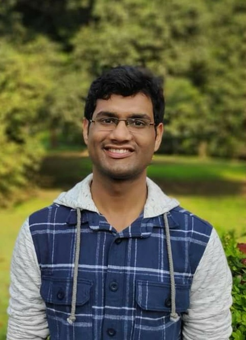
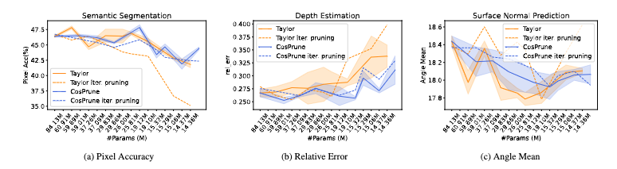
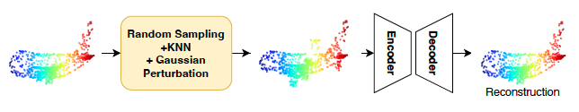
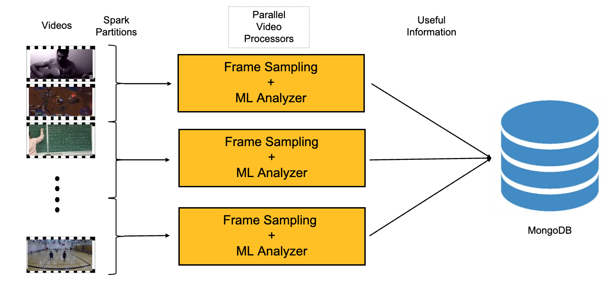
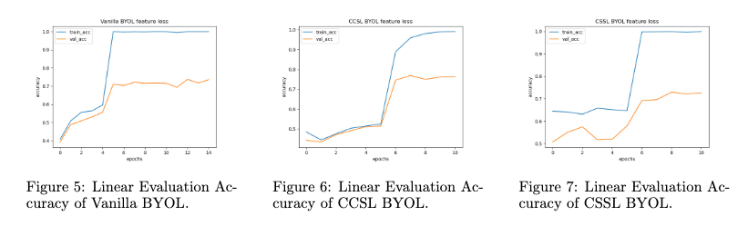
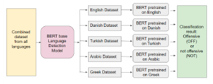
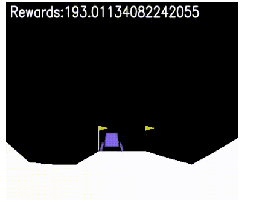
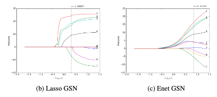
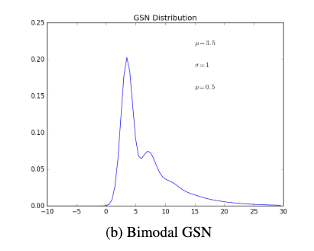

|
Siddhant Garg
I am a Computer Science Master's student at the University of Massachusetts Amherst (UMass Amherst). My studies are focused towards Machine Learning, and Computer Vision.
I completed my undergraduate studies from the Department of Mathematics and Scientific Computing at the Indian Institute of Technology Kanpur (IIT Kanpur).
After that I worked with Samsung Research, Bengaluru, India for 2 years as a Machine Learning Engineer for On-Device AI solutions.
During the summer of 2022, I also worked as Research Scientist Intern at Adobe Research and worked with the Video Understanding Group.
Email /
CV /
Google Scholar /
Github /
LinkedIn
|

|
|
|
A Simple Approach to Image Tilt Correction with Self-Attention MobileNet for Smartphones
Siddhant Garg ,
Debi Prasanna Mohanty,
Siva Prasad Thota, Sukumar Moharana
BMVC, 2021
arXiv / Patent Pending (USPTO)
This work was done at Samsung Research, Bengaluru. We proposed a low-latency Self-Attention MobileNet for real-time image tilt correction for smartphones.
The model was also deployed on the Samsung Galaxy with One UI for the Tilt Correction feature on Samsung Smart Share Tray.
|
|

|
Structured Pruning for Multi-Task Deep Neural Networks
Siddhant Garg , Lijun Zhang, Prof. Hui Guan
UMass Amherst
Paper / Code
Deep Multi-Task models can be further optimized via model compression. In this work, we investigate the effectiveness of structured pruning on multi-task models. We show that, with careful hyper-parameter tuning, architectures obtained from different pruning methods do not have significant differences in their performances across tasks when the number of parameters is similar.
|
|

|
SeRP: Self-Supervised Representation Learning Using Perturbed Point Clouds
Siddhant Garg , Mudit Chaudhary
Course: Intelligent Visual Computing, Instructor: Prof. Evangelos Kalogerakis, UMass Amherst , 2022
arXiv / Code
We proposed a self-supervised method that learns the embeddings by reconstructing the 3D point clouds from noisy data with a Transformer encoder-decoder architecture.
|
|

|
Scalable Video Processing Using CLIP and PySpark
Siddhant Garg , Sridhama Prakhya
Course: Systems for Data Science, Instructor: Prof. Hui Guan, UMass Amherst , 2022
Report / Code
We built a distributed video processing systems using machine learning for large video corpus with PySpark, CLIP and faster inference, distributed storage and faster retrieval.
|
|

|
Self-Labeling Refinement for Robust Self-Supervised Learning with Bootstrap Your Own Latent
Siddhant Garg , Dhruval Jain
Course: Neural Networks, Instructor: Prof. Erik Learned-Miller, UMass Amherst , 2021
arXiv / Code
We proposed a self-labeling refinement method for self-supervised model called Bootstrap Your Own Latent (BYOL) for more robust representation learning.
|
|

|
Multi-Lingual Hate Speech Detection using XLM-Transformers
Siddhant Garg , Mudit Chaudhary, Sridhama Prakhya
Course: Advanced Natural Language Processing, Instructor: Prof. Mohut Iyyer, UMass Amherst , 2022
Report / Code
We used multi-lingual hate speech dataset called OLID and applied various transformer models to identify the best approach for detecting hate speech across many languages. We have used a multi-lingual transformer model called XLM-RoBeRTa, and we have also used BeRT models pretrained specfically on individual languages.
|
|

|
Proximal Policy Optimization (Lunar Lander, Cartpole)
Siddhant Garg , Andrew Teeter
Course: Reinforcement Learning, Instructor: Prof. Bruno Castro da Silva, UMass Amherst , 2021
Paper / Code
Implementation of Proximal Policy Optimization (PPO) for Lunar Lander and Cartpole.
|
|

|
Feature Selection using LASSO regression with Geometric Skew-Normal Distribution
Siddhant Garg
UG Project, Instructor: Prof. Debasis Kundu, IIT Kanpur , 2019
Paper /
Proposed an Expectation Maximization algorithm to find the parameters of the GSN distribution with the LASSO and Elastic-Net regression objective.
The learned distribution is multi-model and the regularization terms help in modeling high-dimensional datasets with very few data points effectively.
For example, we were able to find the most representative covariates, responsible for cancer prediction in the ARCENE dataset.
|
|

|
Metropolis-Hastings Algorithm for Geometric Skew-Normal Distribution
Siddhant Garg
UG Project, Instructor: Prof. Debasis Kundu, IIT Kanpur , 2018
Paper /
Devloped a proposal distribution for using Metropolis-Hastings algorithm to estimates the parameters of the Geometric Skew Normal Distribution.
|
|
{kind=link}